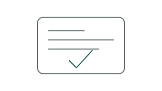
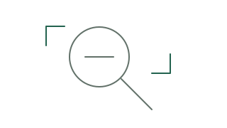
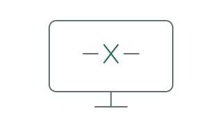

Action hierarchy
Specimens only. These buttons do not dispatch or cancel runs.
Interface system · October 2026
A working design language for ticket-bound sessions and agent orchestration. Quiet surfaces, readable evidence, and actions that say exactly what happens next.
Show the next action first. Put the run, its evidence, and the decision together.
01 / Foundations
These theme values are exported from the live stylesheet. Semantic colors communicate status, never decoration.
Typography
15px body · 13px controls · 12px supporting text
18px section headings · 25px page titles
PROJ-42 · 1 min 24 s · 12 / 18Geist Mono for keys, durations and source evidence. Both fonts are bundled locally.
Spacing & geometry
4px base rhythm · 6px controls · 10px cards · 12px panels.
36px desktop controls; 44px coarse-pointer targets.
02 / Identity & iconography
Preserve the existing Quill feather. Icons use the current 16px grid and 1.5px stroke; eight additions support orchestration.
No matching icons. Try a shorter name.
03 / Components
Opt-in q-* styles for new UI. Existing dashboard classes remain unchanged.
Specimens only. These buttons do not dispatch or cancel runs.
A green test result needs worker evidence. Run completion is not ticket completion.
Reference field only. Run in the isolated checkout; show the recorded result.
Choose a working branch. The default branch is protected.
State the concrete action. Keep the underlying record accessible when the preview is truncated.
04 / Orchestration pattern
A simplified Runs pattern, with example data. This specimen demonstrates status and evidence wording; the production page also includes All, grouped decisions, and selectable run rows.
Example workspace · independent run and ticket states
PROJ-42 / analyse2 suggestions to review · Read-only
PROJ-43 / attempt-fixRunning for 2 min · setup 4 s · Edits source
PROJ-47 / attempt-fixQueued · fix slots 1/1 in use · repository busy
PROJ-51 / attempt-fixTests failed · Retried as a new run
05 / Empty & error states
Small, transparent SVG illustrations. Use one per empty region, with a real explanation and relevant action.

Select a ticket and choose a recipe to prepare a run.
View run pattern
Broaden the project or status filter to see more results.
No suggestions are waiting for an owner decision.

Showing the last snapshot. Changes cannot be queued until the connection returns.
06 / Agent handoff
Start with the Claude guide, reuse existing renderers, and verify the full workflow. A visual state is a promise about the underlying record.